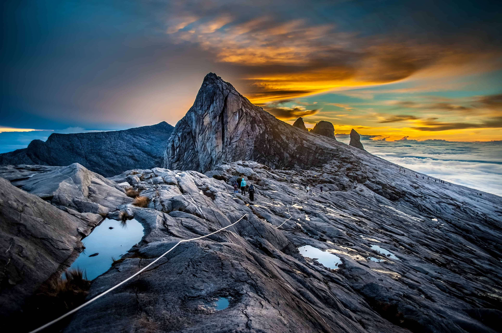
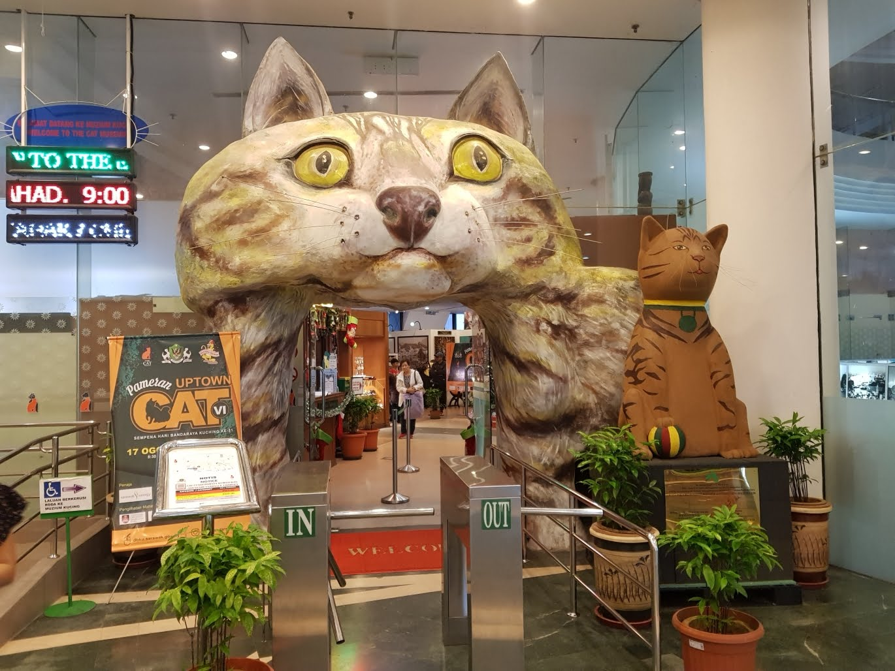

5 Days 4 Nights Package
Overview
Sabah and Sarawak are two unique and fascinating states in the eastern region of Malaysia. Sabah is known for its magnificent natural landscapes, including the famous Mount Kinabalu and rich marine life resources that attract countless adventurers and nature lovers. Sarawak, on the other hand, is known for its diverse cultural heritage and intriguing traditions, where travellers can explore traditional villages, take part in cultural activities, or experience exciting adventure tours. Each of these two states has its own unique characteristics and offers visitors a rich and varied travel experience that will keep them coming back for more.
Day 1: Arrive in Sabah
Morning:
Evening:
Gallery